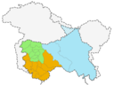

Jammu and Kashmir, a picturesque region nestled in the northern part of the Indian subcontinent,
is celebrated for its breathtaking landscapes and rich cultural heritage.
Divided into the Jammu region, the Kashmir Valley, and Ladakh,
it boasts a diverse array of scenery, from the verdant meadows and serene lakes of Kashmir
to the rugged mountains and high-altitude deserts of Ladakh.
The area is renowned for its unique blend of natural beauty,
including the iconic Dal Lake, and its vibrant traditions,
reflected in its art, music, and cuisine.
With a history steeped in both ancient and modern influences,
Jammu and Kashmir remains a region of profound significance and allure,
attracting visitors with its stunning vistas and cultural depth.
|
 |